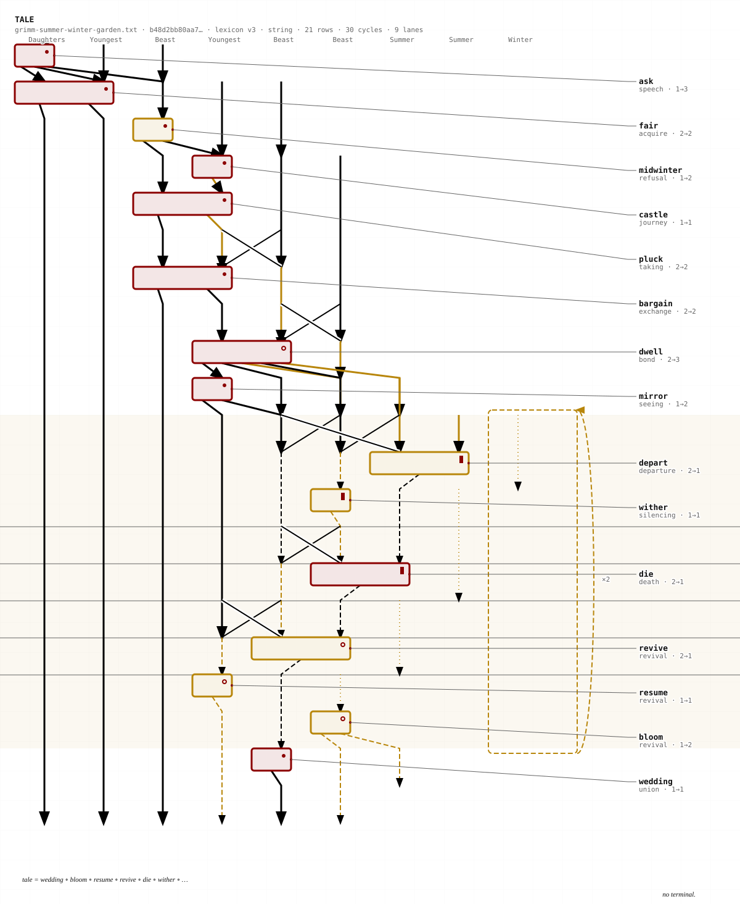

Diagrammatic Immanence
A source text is formalized as a monoidal category, rendered as an SVG string diagram, and emitted as a Strudel live-coding patch — so that the picture and the sound are two renderings of one structure, not two artifacts that resemble each other.


The four stages
Open the app, pick a libretto (or start one by hand), and walk source → libretto → diagram → score. Stage 4 embeds a Strudel REPL with transport controls, so the piece plays in the page.
Stage 2 shows what the libretto says categorically: the typed signature of the composite, the composite as a term in layered normal form, the presentation as a free category, the swap permutation, and — most usefully — the dom/cod ladder, a row per layer showing the wire list before and after. That is the bookkeeping you would otherwise do by hand. Select a phrase in the source and a citation lands at your cursor.
Status
The pipeline runs end to end and all five apparatus invariants are enforced by tests. Two texts
build: librettos/summer-winter.lib (Grimm 68) and librettos/pnouthis.lib
(PGM I.42–195). 535 tests, including property-based verification of the category axioms.
Who it is for
Readers in Deleuze & Guattari studies, reached at a seminar or workshop — people who would object that formalising a rhizome is the striation it warns against. That objection is the point of contact, not an obstacle to it.
The interrogation that named this direction pressed twice for an individual reader and got a venue instead, which is weaker than a name but carries the one thing a name gives you: a date, and an audience that chose to be there. The invariants were written for that reader before they were named — a citation nothing checks is decorative, and an attribution is refused rather than approximated. Both are only worth their cost to someone who might disagree with you.
Docker, Make, git only
Strudel (strudel.cc) for the score lane